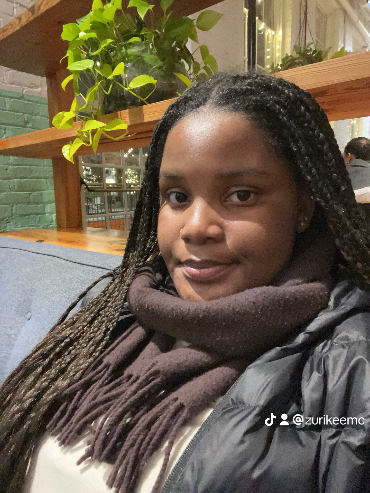

name: zuri
location: greensboro mostly charlotte sometimes
sign: scorpio sun, aquarius moon, taurus rising
favorite colors: sky blue, green obviously
favorite app: pinterest
hobbies: reading, writing, graf, web dev, collecting records, sharing opinions
craving: trader joe's takis
hey im zuri! right now, i happen to be super into web dev and have also been trying to make a project portfolio to show off my works, so i guess that's what this is supposed to be. i'm really into learning, creating, and exploring, and i think that this site is a good way to do all three. this site is supposed to serve as a hub for all of my projects, coding and otherwise. i hope you enjoy your time here :)